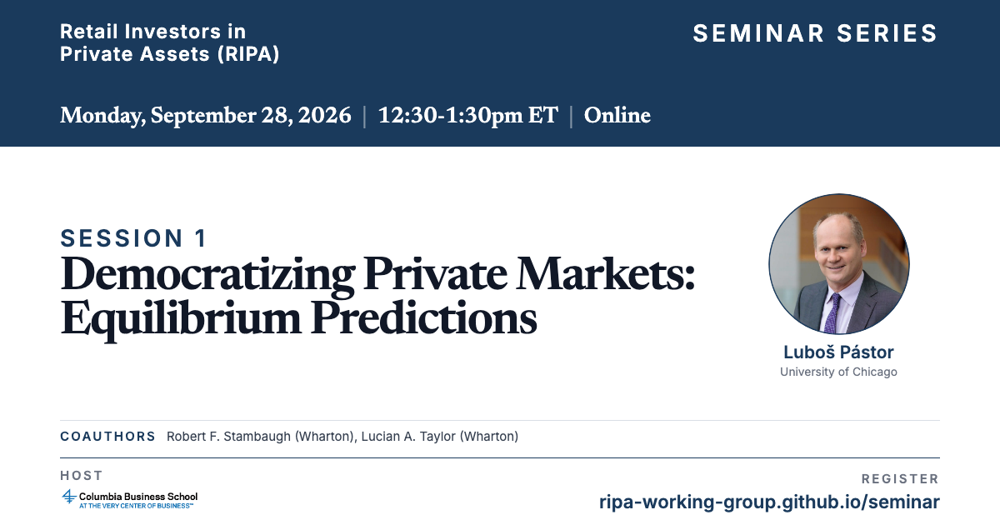

Online Seminar
An online seminar series on household access to private assets, featuring outside speakers presenting work in the area. The seminar is open to a wider audience than the closed working group that preceded it.
The seminar is organized by Mike Ewens, Xuelin Li, and Simon Oh.
Register here to attend the seminar. One registration covers every session. The next is Monday, September 28, when Luboš Pástor presents “Democratizing Private Markets: Equilibrium Predictions.”

Preliminary Schedule
Meetings
Mondays
12:30–1:30pm ET
12:30–1:30pm ET
Format
Online
Outside speakers
Outside speakers
Each session
5 min moderator intro
40 min presentation (no interruptions)
15 min Q&A
40 min presentation (no interruptions)
15 min Q&A
Session 1: September 28 · Luboš Pástor
Session 2: October 26 · Tomasz Piskorski
TBD
Session 3: November 9 · Chuck Fang
Session 4: November 23 · Brian K. Baik
“How Informative Are Private Equity Fund Valuations?”